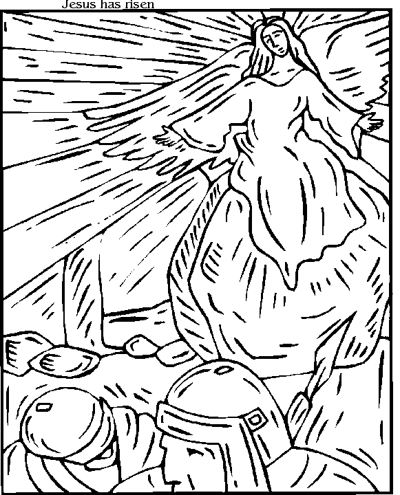

Read the lessons at the Vanderbilt Library website: http://divinity.lib.vanderbilt.edu/lectionary/CEaster/cEasterSun.htm
Read
the lessons at the Vanderbilt Library website:
http://divinity.lib.vanderbilt.edu/lectionary/CEaster/cEasterSun.htm
Sermon Summary
|
Listen to the lessons for the following words, and tick them off when you hear them: |
___ "Bethany" |
|
Is today's Sermon based on one of the Lessons? |
Yes / No |
|
Circle the Lesson that the Sermon is based on. |
Acts
10:34-43
or Isaiah
65:17-25 None of the Above |
|
What is the main point of the Sermon? |
_______________________________ |
|
Write down one Scripture reference that the preacher makes |
_______________________________ |
|
Write down one figure of speech used by the preacher (Metaphors, Similes, hyperbole) |
_______________________________ |
|
Write down five interesting words and discuss them with an adult during coffee hour |
_______________
|
Middle-School Pew-work ...Page 2
|
1 Now
upon the first day of the week, very early in the morning, they
came unto the sepulchre, bringing the spices which they had
prepared, and certain others with them. |
bowed down their faces to
the earth, they said unto them, Why seek ye the living among the
dead? |
things unto the eleven,
and to all the rest. |
D T T T U O B A Y Y O U
|
Word List |
 |
|
(Luke 24:4-5) While they were perplexed about this, suddenly two men in dazzling clothes stood beside them. {5} The women were terrified and bowed their faces to the ground, but the men said to them, "Why do you look for the living among the dead? He is not here, but has risen. (NRSV) |
||
from www.geocities.com/lectionarypuzzles/ Free to distribute for free with this notice. Words are in a straight line in all directions. |
||
Who is referred to as "they" in Verse 1?"
______________________________________________________________________________
Who
are the "two men in dazzling clothes?"
______________________________________________________________________________
What
was the message they had for the women?
______________________________________________________________________________
Who
did the women go tell?
______________________________________________________________________________
What
was the response of those who heard the women's account of what had
happened?
______________________________________________________________________________
Who
did risk finding out if they were right?
______________________________________________________________________________
What
did Peter find?
_____________________________________________________________________________